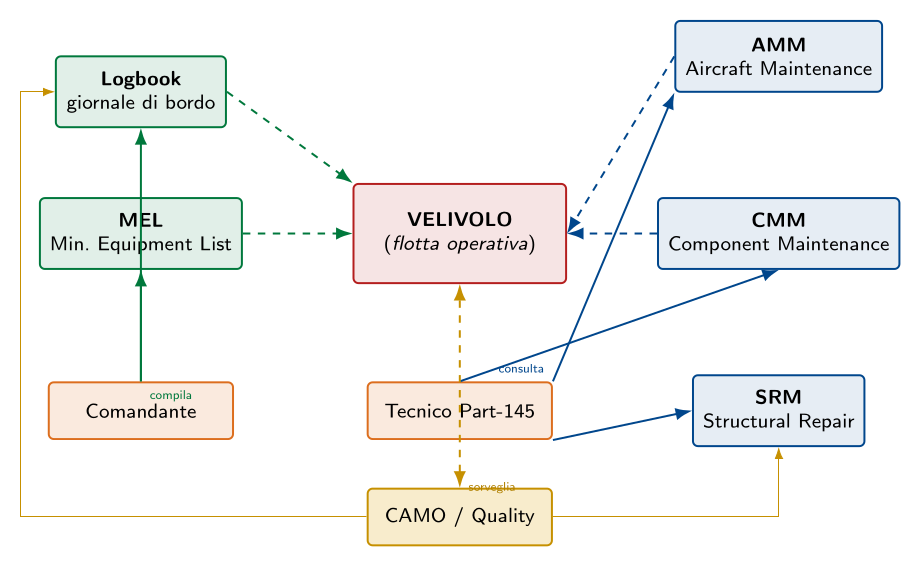

Esame di Stato 2025 — sessione straordinaria
Esame di Stato 2025 — sessione straordinaria
La sessione straordinaria del 2025 si svolge sulla stessa traccia di Prima parte già discussa nei capitoli precedenti (motoelica con struttura alare bilongherone), e propone una Seconda parte con quattro quesiti, fra i quali il candidato ne sceglie due. Per completezza didattica li trattiamo tutti e quattro: i primi tre (controllo a ultrasuoni, funzioni degli elementi dell'impennaggio orizzontale, fenomeni di flutter e divergenza) coprono argomenti già trattati in altri capitoli e qui vengono sintetizzati con la specificità del caso e con i necessari riferimenti incrociati; il quarto (documentazione tecnica di manutenzione) è invece un tema completamente nuovo e di particolare rilevanza professionale, e viene sviluppato in dettaglio.
Prova non distruttiva ad ultrasuoni: principi e limiti
Il controllo a ultrasuoni (UT, Ultrasonic Testing) è la PND di elezione per ispezionare componenti strutturali metallici di forte spessore (longheroni, pannelli sandwich, raccordi forgiati) perché, a differenza delle PND superficiali, è in grado di rilevare difetti interni non altrimenti accessibili. Per la trattazione completa — principio fisico, apparecchiatura, procedimento operativo a 6 passi, schema TikZ del segnale A-scan — si rimanda al paragrafo §sec:2016-q1 del Capitolo §cap:esame2016. In questa sede sintetizziamo i punti essenziali con specifico riferimento al caso del longherone alare.
Principio di funzionamento
Un trasduttore piezoelettrico (sonda) genera un fascio di onde elastiche ad alta frequenza ($0{,}5\,\mathrm{}$–$25\,\mathrm{MHz}$) che penetra il materiale del pezzo. All'incontro con un'interfaccia (la superficie opposta del pezzo o un difetto interno) parte dell'energia viene riflessa e ritorna alla sonda, che la riconverte in segnale elettrico. Misurando il tempo di volo ($t$) e conoscendo la velocità del suono nel materiale ($v \approx 6300\,\mathrm{m/s}$ per le leghe di alluminio), si determina la profondità del riflettore: $$d = \frac{v \cdot t}{2}$$ ove il fattore $1/2$ tiene conto del cammino di andata e ritorno dell'onda.
Visualizzazione del segnale
Sull'oscilloscopio (visualizzazione A-scan) compaiono tre echi caratteristici:
- Eco di partenza (IP, Initial Pulse) all'istante $t=0$, generato dall'interfaccia sonda-pezzo;
- Eco di fondo (BWE, Back-Wall Echo) ad un tempo proporzionale al doppio dello spessore;
- Eco intermedio (eventualmente) fra IP e BWE, segnalatore di un difetto interno: la sua posizione fornisce la profondità, l'ampiezza la dimensione equivalente.
Applicazione al longherone alare
Per ispezionare il longherone alare bilongherone del velivolo della Prima parte (lega 2024-T3, sezione rettangolare cava, momento flettente massimo alla radice) si procede come segue:
- pulizia della superficie esterna dell'anima e delle solette;
- calibrazione su blocco di riferimento dello stesso materiale con riflettori artificiali noti, regolando velocità del suono ($6300\,\mathrm{m/s}$), base dei tempi e guadagno;
- applicazione del couplant (gel) e scansione raster su tutta l'estensione del longherone, prestando particolare attenzione alla zona di radice e ai punti di attacco dei correnti;
- interpretazione delle indicazioni: la presenza di un eco intermedia accompagnata dall'abbassamento dell'eco di fondo è il segno tipico di una cricca interna;
- documentazione e rapporto di prova.
Limiti del metodo
Pur essendo una PND molto potente, il controllo a ultrasuoni presenta alcune limitazioni di rilievo:
- Necessità del couplant: superfici scabrose, ossidate o verniciate richiedono preparazione preventiva.
- Geometrie complesse: spessori molto piccoli, raccordi curvi o sezioni a doppio T (caso tipico dei longheroni!) possono produrre echi di forma che mascherano i difetti reali; servono sonde focalizzate o angolari.
- Difetti lamellari paralleli al fascio (cricche orientate parallelamente alla direzione di propagazione): possono sfuggire alla rilevazione perché non producono riflessione significativa. Si supera la difficoltà con scansioni multi-angolari.
- Personale qualificato: l'interpretazione richiede operatori certificati al livello II secondo EN ISO 9712, capaci di distinguere echi reali da artefatti.
- Costo di apparecchiatura: significativamente superiore a quello di un controllo con liquidi penetranti, anche se ampiamente compensato dalla maggiore informazione fornita.
Funzioni degli elementi dell'impennaggio orizzontale
Configurazioni principali
L'impennaggio orizzontale può essere realizzato in due architetture differenti:
- Stabilizzatore fisso + equilibratore (stabilizer + elevator)
- La superficie principale (stabilizzatore) è fissa rispetto alla fusoliera; alla sua estremità posteriore è incernierata una superficie mobile (equilibratore) che il pilota deflette per generare il momento di beccheggio. Soluzione tipica dei velivoli da turismo e di tutti i velivoli da trasporto subsonici.
- Piano mobile (stabilator o all-flying tail)
- L'intero impennaggio ruota attorno a un asse trasversale; non ci sono superfici incernierate. Soluzione tipica dei velivoli supersonici (per evitare onde d'urto sulle cerniere) e di alcuni velivoli ad alte prestazioni come il Piper Cherokee o il Beechcraft Bonanza. Richiede un sistema di trim più complesso e un'attenta cura della centratura.
Funzioni degli elementi
| Elemento | Funzione strutturale e aerodinamica |
| Stabilizzatore fisso | Strutturale: trasmette i carichi aerodinamici di equilibratura alla fusoliera; sostiene l'equilibratore con cerniere robuste. Aerodinamica: genera la portanza di coda (di solito deportante) che bilancia il momento di picchiata generato dall'ala. |
| Equilibratore | Funzionale: superficie mobile incernierata; la sua deflessione cambia la curvatura efficace dello stabilizzatore producendo una variazione di portanza e quindi un momento di beccheggio. Aerodinamica: controllo dell'asse di beccheggio. |
| Longheroni | Strutturale (primaria): assorbono il momento flettente dovuto al carico aerodinamico distribuito. La struttura è tipicamente bilongherone (anteriore + posteriore) per resistere anche alla torsione. |
| Centine | Strutturale + aerodinamica: mantengono il profilo, ripartiscono i carichi locali (ad esempio quelli sulle cerniere dell'equilibratore), evitano l'imbozzamento del rivestimento. |
| Rivestimento | Strutturale + aerodinamica: forma del profilo e cassone resistente a torsione (insieme alle anime dei longheroni); contribuisce al momento flettente come area collaborante. |
| Trim tab | Funzionale: piccola aletta posta sul bordo d'uscita dell'equilibratore. La sua deflessione genera una piccola forza che tende a mantenere l'equilibratore nella posizione voluta senza che il pilota debba esercitare uno sforzo continuo sul comando. Riduce il carico statico sui comandi (stick force). |
| Servo tab | Funzionale: aletta che, quando deflessa attivamente dal pilota, trascina con sé l'intero equilibratore. Tipica dei velivoli grandi senza servocomandi idraulici. |
| Compensatore aerodinamico (horn balance, set-back hinge) | Funzionale: porzione di superficie mobile che si trova davanti all'asse di cerniera; quando l'equilibratore è deflesso essa genera un momento che aiuta il movimento, riducendo lo sforzo che il pilota deve esercitare. |
| Attacchi alla fusoliera (fittings) | Strutturale: trasmettono il sistema di forze (taglio, flessione, torsione) alla struttura della fusoliera, attraverso la paratia di coda. Sono nodi rinforzati in alluminio fuso o forgiato. |
Specificità funzionale e dimensionale
L'impennaggio orizzontale opera con un coefficiente di portanza assolutamente minore di quello dell'ala (tipicamente $|C_{L,h}| < 0{,}3$) ma a un braccio molto più lungo rispetto al baricentro: il prodotto $C_{L,h} \cdot S_h \cdot \ell_h$ deve generare un momento sufficiente a compensare il momento di picchiata dell'ala. Per questo lo si dimensiona in modo che la sua superficie valga tipicamente il 20 %–25 % di quella alare. Il braccio $\ell_h$ (distanza fra il fuoco dell'impennaggio e il baricentro del velivolo) determina anche il volume di coda orizzontale: $$bar{V}_h = \frac{S_h \cdot \ell_h}{S \cdot c_m}$$ parametro che, per i velivoli da turismo, vale tipicamente $bar{V}_h \approx 0{,}5$–$0{,}9$.
Flutter, divergenza elastica e tecniche di prevenzione
Divergenza elastica (fenomeno statico)
Meccanismo.
Un'ala investita dal flusso aerodinamico genera portanza, che produce un momento torcente attorno al suo asse elastico. Questo momento causa una torsione dell'ala che incrementa l'angolo d'attacco di ogni sezione, generando ulteriore portanza, che a sua volta aumenta la torsione, e così via in un circolo vizioso. Esiste una velocità critica $V_D$ (velocità di divergenza) oltre la quale il sistema diventa instabile: l'ala continua a torcersi indefinitamente fino al cedimento strutturale. Si tratta di un fenomeno statico, ovvero le forze inerziali non giocano alcun ruolo: il sistema raggiunge istantaneamente l'instabilità.Fattori che influenzano l'insorgenza.
- Posizione del centro aerodinamico rispetto all'asse elastico: se il centro aerodinamico (CA, $\sim$ 25% della corda nei profili sottili) è a monte dell'asse elastico, la portanza genera un momento torcente che aumenta l'incidenza $\to$ rischio di divergenza. Se invece è a valle, il momento riduce l'incidenza e il sistema è stabile.
- Rigidezza torsionale dell'ala ($GJ$): più rigida l'ala, più alta la $V_D$. Per questo nelle ali a freccia in avanti, dove la divergenza è particolarmente critica, si ricorre a wash-out passivo dei rivestimenti in materiale composito.
- Allungamento alare ($\AR$): ali ad alto allungamento (es.\ alianti) sono più suscettibili perché più flessibili.
- Rastremazione e angolo di freccia: ali a freccia positiva (in avanti) hanno divergenza a velocità più basse; ali a freccia negativa (all'indietro) sono intrinsecamente più stabili.
Velocità critica di divergenza.
Per un'ala dritta non rastremata, la velocità di divergenza si calcola con una formula del tipo: $$V_D = \sqrt{\frac{GJ}{\rho \, e \, S \, c \, C_{L\alpha}}}$$ ove $GJ$ è la rigidezza torsionale, $e$ è la distanza fra centro aerodinamico e asse elastico, $C_{L\alpha}$ è la pendenza della curva di portanza.Flutter (fenomeno dinamico)
Meccanismo.
Il flutter è un'oscillazione auto-sostenuta (e crescente nel tempo, fino al cedimento) che insorge quando, ad una certa velocità $V_F$ (velocità di flutter), si verifica un accoppiamento risonante fra due o più modi propri di vibrazione della struttura, alimentato dalle forze aerodinamiche. Il caso classico è l'accoppiamento flessione-torsione dell'ala: una piccola perturbazione produce contemporaneamente una flessione e una torsione, le forze aerodinamiche generate dalla torsione amplificano la flessione, e viceversa. L'energia viene continuamente trasferita dal flusso d'aria alla struttura, in fase con il moto, fino a che le ampiezze diventano distruttive.A differenza della divergenza, il flutter è un fenomeno dinamico con frequenze caratteristiche dell'ordine dei Hz; la sua manifestazione è preceduta da vibrazioni avvertibili dal pilota.
Fattori che influenzano l'insorgenza.
- Posizione del baricentro rispetto all'asse elastico: se il baricentro della sezione si trova a valle dell'asse elastico (centro di taglio), un piccolo movimento di flessione genera un momento di torsione che amplifica il moto $\to$ accoppiamento favorevole al flutter. Spostare il baricentro a monte (mass balancing) è la principale tecnica di prevenzione.
- Rigidezze flessionale e torsionale dell'ala: il flutter compare quando le frequenze proprie dei modi di flessione e torsione si avvicinano fra loro. Si progetta affinché siano sufficientemente separate.
- Coefficiente di smorzamento strutturale: smorzamenti elevati ritardano l'insorgenza del flutter.
- Velocità di volo: $V_F$ si abbassa con il numero di Mach (transonic dip); per i velivoli da trasporto è quindi più critica nella zona transonica.
Tecniche di prevenzione progettuale
| Tecnica | Principio e applicazione |
| Mass balancing (bilanciamento di massa) | Spostamento del baricentro delle superfici mobili (alettoni, equilibratori) davanti all'asse di cerniera, con masse di piombo o tungsteno installate nel naso della superficie. È la tecnica principale per evitare il flutter delle superfici mobili. |
| Aumento della rigidezza torsionale | Cassoni alari multilongherone, rivestimenti più spessi nelle zone critiche, materiali compositi con orientazione delle fibre ottimizzata. |
| Separazione delle frequenze proprie | Progettazione strutturale che mantiene le frequenze dei modi di flessione e torsione sufficientemente diverse fra loro (tipicamente con un rapporto $\ge 2$). |
| Posizionamento accurato dei carichi pendolari | Motori, serbatoi e carrelli, se montati sull'ala, vengono posizionati in modo da non spostare i nodi di vibrazione verso configurazioni critiche. |
| Test di flutter sperimentali (flight flutter testing) | Durante la certificazione, si eseguono prove di volo a velocità progressivamente crescenti, eccitando le superfici mobili con stick raps o eccitatori meccanici, e monitorando lo smorzamento. La $V_F$ deve risultare almeno 15 % al di sopra di $V_D$ (CS-23.629). |
| Active flutter suppression | Sistemi fly-by-wire che, mediante sensori inerziali e attuatori sulle superfici mobili, generano in tempo reale comandi anti-flutter. Soluzione adottata nei velivoli moderni ad alte prestazioni (Boeing 787, Airbus A350). |
| Limitazioni operative | In fase finale di certificazione, se un fenomeno aeroelastico non può essere completamente eliminato, si fissa una $V_{NE}$ (Never Exceed Speed) inferiore alla $V_F$ con margine di sicurezza, e si vincolano le condizioni di carico (peso, centraggio, velocità) negli inviluppi consentiti. |
Documentazione tecnica nella manutenzione di una flotta commerciale
Logbook — giornale di bordo
Il logbook (in italiano libretto di bordo o giornale di bordo) è il documento operativo primario del singolo velivolo. La sua funzione è registrare cronologicamente tutti gli eventi rilevanti dal punto di vista dell'aeronavigabilità.
Contenuto.
- Identificativi del velivolo: marche di registrazione, numero seriale, costruttore, modello, anno di costruzione.
- Voli effettuati: data, equipaggio, tratta, ore-volo, cicli (decollo + atterraggio).
- Anomalie rilevate dal pilota (pilot reports): segnalazioni durante o al termine del volo.
- Interventi correttivi eseguiti dalla manutenzione, con riferimento alla documentazione tecnica applicata e firma del tecnico certificatore (CRS).
- Riferimenti incrociati a interventi maggiori riportati in dettaglio nei libretti di manutenzione.
Funzione operativa.
Il logbook è in possesso del comandante durante il volo e del responsabile di manutenzione a terra. È il documento che consente di: (a) verificare che il velivolo è aeronavigabile prima del decollo; (b) gestire la consegna fra equipaggi e fra base operativa e officina; (c) ricostruire la storia del velivolo per audit, indagini su incidenti, valutazione del valore residuo del velivolo.MEL — Minimum Equipment List
La MEL (Minimum Equipment List) è il documento che specifica quali equipaggiamenti del velivolo possono essere temporaneamente inoperativi senza compromettere la sicurezza del volo, e a quali condizioni operative.
Origine e struttura.
La MEL è derivata dalla MMEL (Master MEL), redatta dal costruttore e approvata da EASA, e poi adattata dalla compagnia aerea ai propri profili di missione e approvata dall'autorità nazionale (ENAC). Per ogni equipaggiamento elenca:- l'identificativo (es.\ ATA Chapter, voce specifica);
- il numero di unità installate e il numero minimo richiesto per il volo;
- le categorie di rettifica (A, B, C, D) che fissano il tempo massimo entro cui il guasto deve essere riparato (es.\ A = entro lo stesso volo o 1 giorno, B = 3 giorni, C = 10 giorni, D = 120 giorni);
- le eventuali procedure operative (O) o di manutenzione (M) da applicare per consentire il volo con l'equipaggiamento inoperativo (es.\ riduzione MTOW, limitazione di quota, divieto di volo notturno).
Funzione operativa.
La MEL evita che ogni piccola anomalia metta il velivolo a terra (e quindi causi cancellazioni di voli), pur garantendo livelli di sicurezza adeguati. È utilizzata quotidianamente dal comandante (per autorizzare la partenza con un'avaria minore) e dal manutentore (per applicare le procedure di rettifica). Dal punto di vista del business, una MEL ben gestita è uno strumento fondamentale per la regolarità della compagnia, ovvero la capacità di rispettare gli orari pubblicati.AMM — Aircraft Maintenance Manual
L'AMM (Aircraft Maintenance Manual) è il manuale di manutenzione del velivolo redatto dal costruttore e fornito alla compagnia aerea con il rilascio del Certificato di Tipo. Costituisce il riferimento tecnico primario per ogni intervento sulla cellula e sui sistemi di bordo.
Struttura ATA.
L'AMM è organizzato secondo i capitoli ATA (Air Transport Association), uno standard di nomenclatura che assegna un numero a ciascun sistema. Esempi:- ATA 21 — Air Conditioning;
- ATA 27 — Flight Controls;
- ATA 32 — Landing Gear;
- ATA 71 — Power Plant.
Funzione operativa.
L'AMM è il documento che il tecnico Part-145 deve consultare prima di eseguire qualsiasi intervento, e a cui fa riferimento nella registrazione finale (CRS). È in continua evoluzione: il costruttore emette Service Bulletins (SB), Service Letters (SL) e revisions per aggiornare le procedure in base all'esperienza di flotta e per implementare le Airworthiness Directives (AD) emesse dalle autorità.CMM — Component Maintenance Manual
Il CMM (Component Maintenance Manual) è il manuale di manutenzione del singolo componente (motore, APU, attuatore, computer di volo, ecc.), redatto dal fabbricante del componente stesso (che spesso è diverso dal costruttore del velivolo). È utilizzato nelle officine specialistiche di terzo livello (component shops), che riparano e revisionano il componente fuori dal velivolo.
Contenuto.
- Identificativo, costruttore, numero di parte (P/N) e numero seriale;
- Procedure di smontaggio, ispezione, prove funzionali, riassemblaggio;
- Limiti di vita utile (life limits), ore-funzionamento o cicli;
- Parti di ricambio elencate per albero CCT (Component Catalog Tree);
- Attrezzatura speciale necessaria (special tools).
Funzione operativa.
Il CMM è il riferimento per la manutenzione modulare: il velivolo viene riparato per sostituzione del componente difettoso (LRU, Line Replaceable Unit), e il componente smontato viene poi inviato in officina dove il CMM ne guida la riparazione. Questo schema riduce il tempo di fermo del velivolo e concentra le specializzazioni più costose.SRM — Structural Repair Manual
L'SRM (Structural Repair Manual) è il manuale di riparazione della struttura del velivolo, redatto dal costruttore. Contiene tutti i procedimenti standard certificati per riparare danni strutturali (ammaccature, perforazioni, cricche, distacchi di rivetti) sul rivestimento, sui longheroni, sulle centine, sugli attacchi.
Contenuto.
- Damage assessment: criteri per valutare l'estensione del danno e classificarlo (lieve, riparabile, da rimpiazzare);
- Repair schemes: piani di riparazione standard certificati, con disegno tecnico, scelta del materiale di rinforzo, dimensione dei rivetti, sequenza di esecuzione;
- Tolleranze: limiti di accettabilità di un danno (entro cui non è necessaria riparazione) e criteri di accettazione della riparazione eseguita;
- Materiali approvati: leghe, finiture, mastici, sigillanti.
Funzione operativa.
L'SRM è utilizzato nelle officine Part-145 per gli interventi di tipo strutturale, tipici a seguito di danni accidentali (ground damage, bird strike, grandine, urto con ground equipment). Le riparazioni che esulano dallo schema SRM (out-of-SRM repair) richiedono un'autorizzazione specifica del costruttore (Repair Approval Sheet, RAS) o di un'organizzazione di progettazione approvata (Part-21 Design Organisation Approval).Tabella riassuntiva
\setlength{\tabcolsep}{4pt}
| lp{3.5cm}Xp{3.5cm}@{}}
Sigla | Nome esteso | Funzione | Redatto da |
| Logbook | Giornale di bordo | Tracciamento operativo del singolo velivolo: voli, anomalie, interventi. | Compagnia aerea |
| MEL | Minimum Equipment List | Equipaggiamenti che possono essere inoperativi e relative procedure. | Compagnia (da MMEL del costruttore) |
| AMM | Aircraft Maintenance Manual | Procedure di manutenzione di cellula e sistemi, organizzate per capitoli ATA. | Costruttore del velivolo |
| CMM | Component Maintenance Manual | Procedure di manutenzione di un singolo componente in officina. | Costruttore del componente |
| SRM | Structural Repair Manual | Procedure standard di riparazione strutturale. | Costruttore del velivolo |
Schema delle interazioni

Documenti complementari
Oltre ai cinque documenti principali oggetto del quesito, completano il quadro documentale di una flotta commerciale:
- IPC (Illustrated Parts Catalog): catalogo illustrato delle parti di ricambio del velivolo, con disegni esplosi e numero di parte (P/N) per ogni componente. Strumento di magazzino e di ordine ricambi.
- TSM (Trouble Shooting Manual): guida di diagnostica dei guasti, organizzata per sintomi.
- WDM (Wiring Diagram Manual): schemi elettrici dettagliati di tutto il cablaggio del velivolo.
- FCOM (Flight Crew Operating Manual): manuale operativo dell'equipaggio (procedure normali, di emergenza, prestazioni).
- MPD (Maintenance Planning Document): piano dei controlli periodici, tradotto in pratica dalla compagnia in un programma di manutenzione approvato.
- MOE (Maintenance Organisation Exposition): manuale dell'organizzazione Part-145 della compagnia, descrive procedure interne, qualifiche, struttura.
- CAME (Continuing Airworthiness Management Exposition): manuale equivalente per la CAMO.